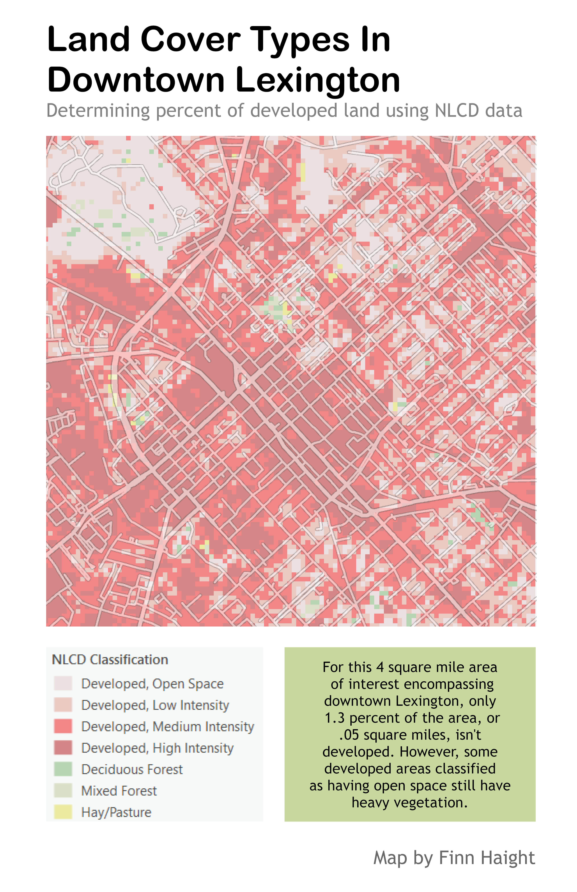

Take a virtual tour of the city with Cesium Ion
The Heart of the Bluegrass
Exploring Downtown Lexington, Kentucky
About this project
Lexington has always had a fond place in my heart, and visiting the city was always a big thing in my family. Yearly trips to see friends and relatives, and the long drive from the outskirts of Chicago into the heart of Kentucky were highlights of my childhood.
In creating this project, I wanted to use all the skills I've aquired so far in using GIS to focus on my home away from home. I'll be analyzing the connection between the city and nature, as well as highlighting some exciting local landmarks.
Visualizations created from lidar data provided by KyFromAbove in ArcGIS Pro and Blender, May, 2025.
Page and visualizations created by Finn Haight for GEO 409, Department of Geography, University of Kentucky. Spring 2025.
Where are Lexington's green spaces?
Lexington Land Cover. Download geospatial PDF

Lexington Vegetation Render. Download geospatial PDF